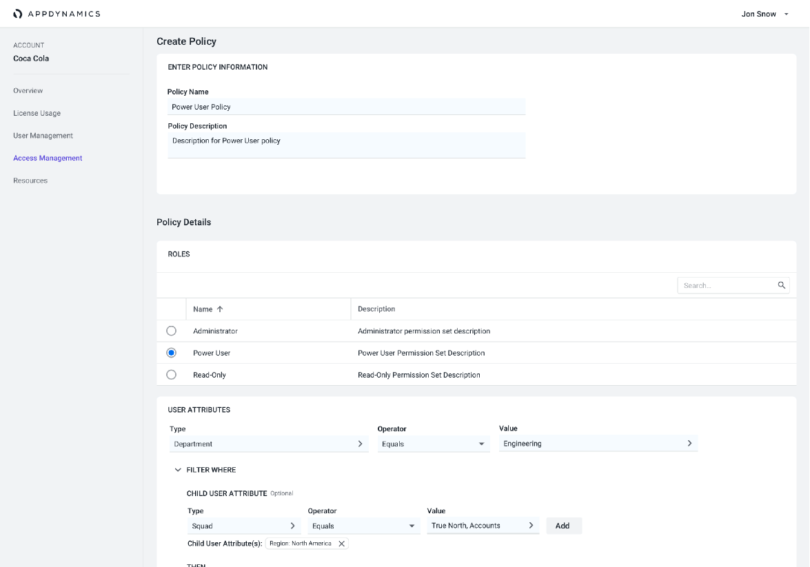
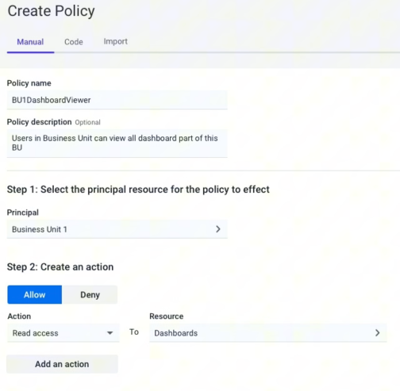
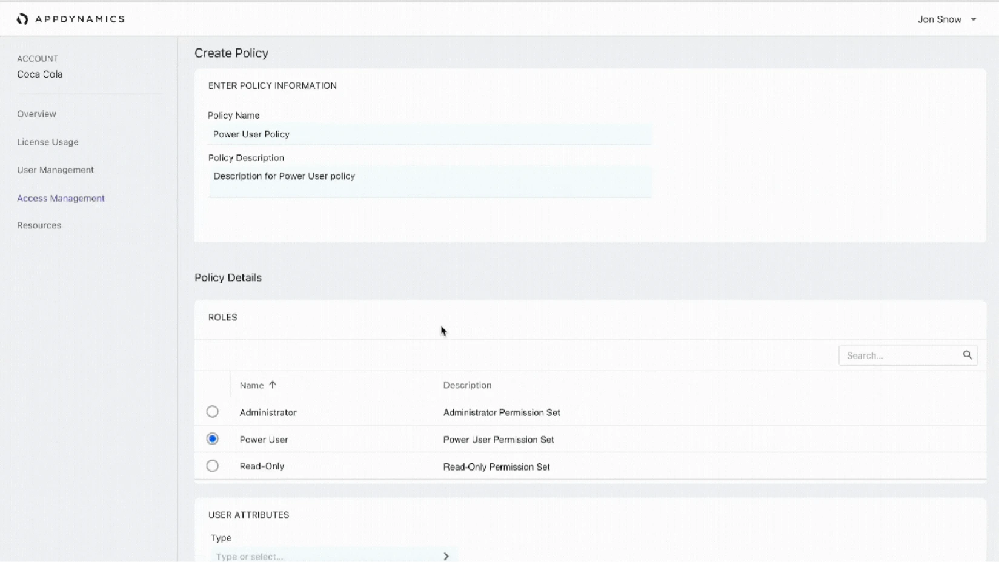

- Enterprise security
- Access management
- Platform architecture
Fifteen screens and a box of ticks to grant one person access
- Client
- AppDynamics · Cisco
- Delivered
- User research, competitive analysis, prototyping, iterative testing

The brief
Complex, rigid role-based permissions were creating inefficiency, usability issues and security risks.
Access in AppDynamics was granted role by role, screen by screen. An administrator adding one person had to work across the product setting permissions by hand, and then had no way to see, in one place, what that person had actually been given. At the scale our customers ran at — thousands of users across business units, environments and regions — the model didn’t hold.
The cost wasn’t only time. A permissions model nobody can audit is a permissions model nobody trusts, and the safe move under that kind of friction is always to over-grant.
“In your product you have to go into 15 different screens, tick the little boxes to say what you want to give them, and then you can’t even find out what’s even [been granted] in one click of a box… User management is so rubbish.”
Who it was for
- Target users
- IT administrators managing multiple environments and user access requirements.
- Constraints
- Needed compatibility with both legacy infrastructure and new cloud-based environments.
- Goals
- Enable granular access control, improve security, and reduce role setup time for admins.
Security with users in mind
Design a world where managing permissions was as simple as setting a few clear rules. Prioritize user satisfaction by reducing setup time and strengthening security — all by putting business and user needs at the center.
- User goal
- Enable granular access control, improve security, and reduce role setup time for admins.
- Business goal
- Improving security and usability to retain clients and support scale.
- Measures
- Reduce setup time, strengthen security, and improve user satisfaction.
Stop assigning permissions. Start writing rules.
The design assumptions
We went into the work with three bets: an entity-based access model, tagging for categorization, and simplified permission inheritance. Instead of ticking boxes per user per screen, an admin writes a policy — this principal, this action, this resource — and the system applies it.
Granular access
Least privilege becomes something you can actually express. Attributes — department, squad, region, business unit — filter who a rule applies to, so a policy written once covers the people it should and nobody else.
Simple access controls
One readable sentence per rule: allow or deny, an action, a resource. The point of the whole exercise was that an admin should be able to look at a policy and know what it does.
Manage via API, or import
Admins at this scale automate. Policies are authorable by hand, as code, or imported from the rules already living in another application — so the product meets the tooling teams already have.


Validating it
A permissions model is the kind of thing that reads well on a slide and falls apart the first time a real administrator describes their org chart. So the work ran as three passes, each one aimed at breaking the model before we committed to it.
01 — User research and competitive analysis
What admins were actually doing to get around the old model, and how the rest of the industry had solved the same problem.
02 — Prototype development
Policy creation built out far enough that participants could write a real rule for a real team, not click through a happy path.
03 — Iterative testing
Revise, retest, repeat — with scale as the thing under test every round.
Designing for scale
Rules only help if they survive an organisation with two thousand users in it. Inheritance had to be legible, attributes had to map onto how companies already describe themselves, and every policy had to be readable back at a glance by whoever inherits the account next.

Results
- Reduced setup time
- Admins could now manage permissions faster, leading to a more efficient and user-friendly experience.
- Improved security and usability
- The new model allowed for granular, least-privileged access control, reducing security risks and creating a more flexible permissions structure.
- Customer satisfaction
- Positive feedback from usability testing and client responses post-launch indicated increased satisfaction and a stronger sense of control for admins.
Learnings
What worked well was the entity-level access control and tagging. Together they significantly reduced role setup time, which was the number the whole project was pointed at.
It reinforced how much validating with end-users matters. The model made sense on a whiteboard long before it made sense to an administrator describing a real org, and every round of testing moved it closer to the second thing.
The broader lesson was about designing scalable systems that meet both user needs and business goals at once. Security and usability get framed as a trade — here, the thing that made access easier to set up was the same thing that made it safer.